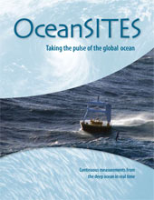

|
|
|
|
News
SCOR WG 154- Integration of Plankton-Pbserving Sensor Systems to Existing Global Sampling Progammes (P-OBS) at OSM2020
Upcoming Meeting
OceanSITES 2020  MissionThe mission of OceanSITES is to collect, deliver and promote the use of high-quality data from long-term, high-frequency observations at fixed locations in the open ocean. OceanSITES typically aim to collect multidisciplinary data worldwide from the full-depth water column as well as the overlying atmosphere. RationaleTime series observations at critical or representative locations are one essential element of a global ocean observing system to complement a range of other approaches. They can provide: a unique view of the full temporal behavior of a system; accurate reference and long-time baseline data; and the maximum possible range of interlinked variables from the seafloor to the atmosphere while enabling shared resources. Benefits of OceanSITESOceanSITES Network
OceanSITES is a worldwide system of long-term, open-ocean reference stations measuring dozens of variables and monitoring the full depth of the ocean from air-sea interactions down to the seafloor. It is a network of stations or observatories measuring many aspects of the ocean's surface and water column using, where possible, automated systems with advanced sensors and telecommunications systems, yielding high time resolution, often in real-time, while building a long record. Observations cover meteorology, physical oceanography, transport of water, biogeochemistry, and parameters relevant to the carbon cycle, ocean acidification, the ecosystem, and geophysics. Learn more about OceanSITES |